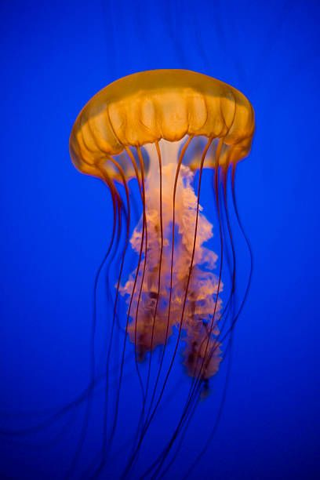

Aincrad.JHB
ABOUT
BLOG
CONTACTS
Media and Information Literacy
Output in 2nd Quarter: Historical Timeline of Traditional and Media Information
Website created by: Jherson Bartolay
Co-partner in this project:
Link Start